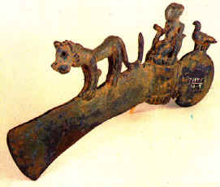

فلزکاری

تـبـر فـلـزي - لـرسـتـان 1000 قـبل از ميلاد
شواهـد و مـدارک باستانشناسي اين نکـته را تـائـيـد مي کـند که شمال و مرکز ايران جزو قديمي ترين مراکز صنايع فـلزکاري جهـان بوده است. آشکار است که بشر تـنهـا در سرزميني مي تـوانست به سودمندي فـلز پـي بـبرد که در آن فـلزات و کانيهـاي آنهـا وجود داشته باشد. ايران از لحاظ طبيعي داراي ذخاير بزرگـي از کانـيها است. مردم تـمدن هـاي نخستـيـن درهً رودخانه هاي بزرگ مصر، بابل، هـند و جيحون با تمام پـيـشرفـتهـايي که داشته اند نـتوانستـند اولين فـلز کاران جـهـان باشـند. حفاريهـاي اخير نشان داده است که فعـاليـتهـاي فلزکاري در تـمدنهـاي کشورهاي پـيش گـفته شده نسبتا دير شروع شده است.
رشته کوهـهايي که از تـوروس در تـرکـيه تا کرانه هاي جنوبي درياي مازندران کشيده مي شود سرشار از انواع کانيـهـا و سوخت بود و دانـش فـلزکاري از آنجا به مراکز ديگـر در آسيا، آفريقا و اروپـا گسترش يافت.
در شمال ايران يک رشته معـادن مس از قـفـقاز تا پـامير کشيده شده است. ابن حوقل، جغـرافي دان عـرب از مـعـادن مـس کـان صبـي زاوه، سبزوار و فـخـر داود نـزديـک مشهـد و بخـارا در ماوراءالنهـر صحبت مي کند. معادن مس کاشان، انارک، اصفهـان و بخـارا براي خلفاي اسلامي مقارن قـرن نهـم مسيحـي بسيار با اهـميت بود، زيرا از اين معـادن هـر ساله بـيش از 10000 دينار خراج حاصل مي گـرديد.
مي تـوانيم چـنين تصور کنيم که صنعـتگـران قـديم براي به دست آوردن مس انواع سنگـهـاي فـلزي را آزمايش کـرده اند و بـدين تـرتيب تصادفاً آلياژهـاي مس را توليد کرده اند. در نيمهً دوم هـزارهً سوم پـيش از مسيح استعـمال فـلز رو به افـزايش گـذاشت. از گـورستان شوش، تپه حصار، تـپه گـيان و تـپـه گـئوي ابزار مفرغـي و زينت آلات مفرغي و نقـره اي زياد به دست مي آيد. گـذار از عصر سنگ به مس بسيار تدريجي بود ولي در ايران عصر مفرغ در 2000 سال پـيش از مسيح بخوبي پـيشرفـت کرده بود.
بطوري که از روايات آشوريان برمي آيد ايران در هـزارهً اول پـيش از مسيح محل تهـيه فـلزات مخـتـلف بود. استعـمال روز افزون آهـن در هـزارهً اول در بـنـياد اقـتصادي جامعـه اثـر بسياري داشت.
اگـر درباره مفرغـهـاي لرستان، که در نواحي کوهـستانهاي باختري ايران است، مختصري گـفتگو نشود، شرحي که ما در بالا دربارهً مفرغ و آهـن ايران داده ايم، کامل نخواهـد شد. تـقـريـبا از سال 1930 به بعـد تعـداد زيادي اشياء فـلزي زيـبا در بازار عـتـيقه فروشان جهـان ارائه مي شد که توسط خاک برداران غـير مجاز قاچاق گورستانهاي قديمي پـيدا شده بود، اين عـده توجه کرده بودند که مقـبره هايي که دور و بر آنهـا به دقـت با سنگ مفروش شده داراي زيور آلات و هـدايايي است که با مردگـان روزگـاران کـهـن، که تا کـنون تـمدن آنهـا ناشناخته مانده است، دفـن شده اند. طرح و هـنرهـاي دستي که روي اين اشياء بکار رفـته چـنان زيبان و دل انگـيز و عـاليست که کارشناسان را به شگـفتي آورده است. پـاره اي از اين اشيا داراي حـروف آشوري است که تاريخ و ساختـشان را کاملا مشخص مي کـند. چـند تا از آنهـا متعـلق به سدهً دوازدهـم و دهـم پـيش از مسيح است، اما اکـثـراً به سده هـاي هـشتم و هـفتم پـيش از مسيح تعـلق دارند. در فرهـنگ مادي جـهـان باستان به ندرت مي تـوان قطعـاتي مانـنـد مفـرغـهـاي لرستان داراي طرح و ترکـيـبي چـنين پـيچـيده و پـيـشرفـته يافت. نفوذ زياد تـمدن آشوريهـا، هـيتيتهـا، حورانـيـهـا و حتي سکاهـا را مي تـوان در اين اشـيا ديد؛ ولي شکـل و چهـرهً بسياري از طرحـهـاي تـپـه سيلک نيز در آنهـا به خوبي نمايان است. هـنرمندان و صنعـتگـران لرستان در مفرغ ريزي استادي تام يافته و هـمچـنـين فن آهـن کاري را هـم آغاز کرده بـودند. گـويا بـسياري از اشياء مفـرغـي به شيوهً ريخـته گـري دقـيق با قـالـبگـيري مومي ريخـته شده است. اين اشيا از لحاظ نماياندن جزئيات کار، شکـل و زيـبايي چـنان هـستـند که تـنها با شيوهً ريخته گري بالا مي توان آنهـا را تهـيه کرد.
از مادهـا که در سدهً هـفـتم پـيش از مسيح در شمال ايران به پادشاهي رسيده اند کارهـاي فلزي خيلي کمي به يادگـار مانده ست، گـر چـه پاره اي از اشياء فـلزي که اخيرا از آذربايجان بدست آمده، ظاهـراً بازگـو کـنـندهً اين معـناست که نفـوذ سکاهـا به تـدريج کاسته شده و سبک مادهـا در اين دوره جايگـزين آن شده است. هـنگـامي که بـين سالهـاي 559 و 530 پـيش از مسيح، کوروش کـبـيـر سلطنت ماد و پارس را يکي کرد، نخستين شاهـنشاهي بزرگ را بوجود آورد. اين شاهـنشاهي در زمان داريوش اول به اوج خود رسيد. در آن هـنگام مرحلهً نوي از هـنرهـاي صنعـتي پـديد آمد و مواد خام از هـمهً گـوشه هاي کشور مي رسيد و نيز صنعـتگـران ساير کشورهـا به سوي کاخهاي شوش و تخـت جـمشيد سرازيز شدند. اين پـيشرفـت تازه در لوحهً يادبودي که بعـنوان " فرمان بنياد شوش " تهـيه شده است به خوبي ديده مي شود، اين لوحه در مورد فـلزات حاکي است که: زر از سارديس و بلخ آورده شده و در اينجا ساخـته شده است ... و سيم و مس از مصر ... زرگـراني که روي طلا کار مي کـردند مادهـا و مصريهـا بودند.
پس از سقوط شاهـنشاهي هـخامنشي در حلمه اسکـندر، جانشينان اسکـندر مقـدوني، سلوکيهـا، از اتحـادي که در جـهان مـتمدن آن روز تحت سلطهً تمدن يونان بوجود آمده بود، ثروتـمند شدند. آنهـا راه هـاي تجاري ميان هـندوچـين و مديترانه را در اختيار گـرفـتـند. ايران آهـن و مس و قلع و سرب را از معـادن دولتي صادر مي کـرد و فولاد هـند که از طريق ايران فرستاده مي شد، براي بازرگـانان ايراني متضـمن سود هـنگـفـتي بود. در مدت پادشاهي پـارتـهـا ( 250 پـيش از مسيح تا 224 پـيش از مسيح ) روم در تـجارت فـلزات عامل اقـتصادي مهـمي به شمار مي رفت که تمام توليد ايران را به اضافه کالاهـاي عـبوري از هـند به خود اخـتصاص مي داد. سکه هـاي نقـره پارتـهـا بايد مقادير بسيار زيادي ضرب شده باشد. هـنگـامي که نويسنده پـيش از جنگ جـهـاني دوم در ايران مي زيست، سکه هاي چهـار درهـمي پارتي در مناطق دورافـتاده به عـنوان پول بکار برده مي شد؛ آن هـم فـقـط از لحاظ مقدار نقـره اي بود که در آن وجود داشت. دودمان ساساني پس از پـارتـها روي کار آمدند ( 224 - 656 ميلادي ) تـمدن و هـنر و صنايع دستي هـخامنشي را زنده کردند. فراورده هـاي فلزي ساسانيان در روزهـاي تـيره و تـار عصر تاريک اروپا به ويژه از طريق بـيزانس به آن قاره وارد شد و به گـونه اي که روش فـني ما را تحت نـفوذ قـرار داد. آنچـه را که ما امروز هـنر اسلامي مي ناميم در اصل بر پايهً سنت و مهـارت و استادي صنعـتگـران ساساني است.
دورهً اسلامي
در آغاز سدهً نهـم ميلادي اکثـر ايرانيان مسلمان شده بودند. اسلام نيروي الهـام بخـش جديدي شد. نفـوذ ايرانيان در صنعت و هـنر با عـناصر بيزانسي در بغـداد به هـم آميخت و در سراسر قلـمرو اسلام گسترش يافت؛ و از يک طرف از خاورميانه تا اسپانـيا و از سوي ديگـر در آسيا تا مرزهـاي چين و هـند کشيده شد. در عوض هـنر ايراني از سبکـها و روشهـاي کشورهايي که در آن نفوذ کرده بود توانگـر و برخوردار گـرديد و حاميان درجه اول صنايع و هـنر، حکـمرانان و سلاطين بودند.
بازگشت
|